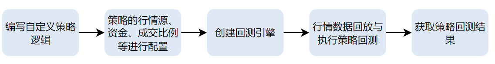
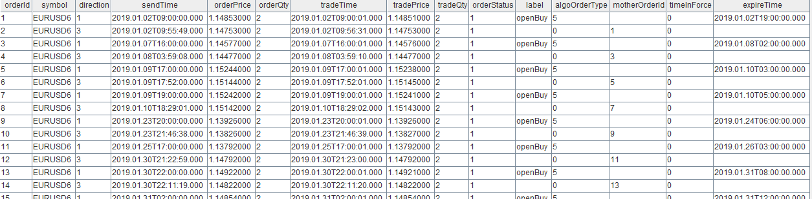

DolphinDB 回测平台使用和性能优化攻略
策略回测是量化交易投研的一个重要环节。量化策略上线之前，必须通过回测评估策略在历史数据上的表现。中高频策略回测相比于低频策略回测，数据量增加了几个数量级，无论是数据查询或者计算方面都对性能有更加苛刻的要求。DolphinDB 实现了中高频回测引擎，回测引擎除了使用 C++ 代码提升性能外，还支持使用 JIT 技术，提升策略事件回调函数运行效率。本文从策略编写中可能遇到的问题点出发，介绍如何使用 DolphinScript 编写高性能的回测策略。
DolphinDB 回测引擎
DolphinDB 的回测引擎支持多种资产多种行情消息的策略回测，以满足不同用户的回测需求，如股票的逐笔+快照、快照、逐笔（宽表）、逐笔+快照（宽表）、快照+逐笔成交明细、分钟频和日频行情策略回测；期货和期权的快照、分钟频和日频行情策略回测；数字货币的快照、快照+逐笔成交明细、分钟频和日频行情策略回测；银行间债券的快照、快照+逐笔成交明细以及融资融券策略。另外，DolphinDB 回测引擎插件支持使用JIT技术，以提升事件函数的运行效率，达到性能提升的显著效果。
回测平台的核心模块
DolphinDB 回测引擎主要分为四个核心部分：用户自定义策略函数，策略配置与创建，行情数据回放，执行回测引擎并调用引擎接口获取回测结果。回测引擎以插件的形式提供服务，其逻辑架构如图 1-1 所示。回测的主要工作流程包括：（1）回测引擎接收按时间先后顺序回放的数据流、引擎内部把数据流分发给模拟撮合引擎和相应的行情回调函数（2）行情回调函数处理策略逻辑并发送委托订单（3）回测引擎根据策略委托订单进行风控管理（4）通过风险控制的委托订单发送给模拟撮合引擎进行订单撮合（5）回测引擎根据订单成交情况实时进行持仓和资金统计管理，策略回测结束返回策略的收益、成交明细等信息。

使用 DolphinScript 来编写回测策略时，通常包含图 1-2 所示的 5 个步骤。首先，回测引擎提供多个事件函数，包括策略初始化、每日盘前和盘后回调函数、逐笔、快照和K线行情的回调函数、委托和成交回报函数等。用户可以在策略初始化中定义指标、在其他相应的回调函数中编写自定义策略。其次，对策略的行情源、资金、订单延时和成交比例等进行配置。再次，根据策略和配置，创建相应的回测引擎。接着，回放数据源、执行回测引擎。最后调用引擎接口获取回测的结果。
下面通过简单的示例来展示 DolphinDB 回测引擎的使用流程。
首先编写自定义策略逻辑：
@state
def pctChg(lastPrice, prevClosePrice){
return lastPrice\prevClosePrice - 1
}
def initialize(mutable context){
//初始化回调函数
print("initialize")
//订阅快照行情的指标
d = dict(STRING,ANY)
d["pctChg"] = <pctChg(lastPrice, prevClosePrice)>
Backtest::subscribeIndicator(context["engine"], "snapshot", d)
context["maxPos"] = 500
}
def beforeTrading(mutable context){
//每日盘前回调函数
//通过context["tradeDate"]可以获取当日；
print("beforeTrading: " + context["tradeDate"])
//通过backtest::setUniverse可以更换当日股票池
Backtest::setUniverse(context["engine"], ["000001.XSHE"])
context["open"] = dict(STRING,BOOL)
}
def onSnapshot(mutable context, msg, indicator){
//查询目前该的持仓
pos = Backtest::getPosition(context["engine"], msg.symbol)
longPos = pos.longPosition
if (indicator.pctChg > 0.01 and longPos <= context.maxPos and
context["open"][istock] != true){
Backtest::submitOrder(context["engine"],
(msg.symbol, context["tradeTime"], 5, msg.offerPrice[0], 100, 1), "buy")
context["open"][istock] = true
}
}
def onOrder(mutable context, msg){}
def onTrade(mutable context, msg){}
def afterTrading(mutable context){}
def finalize(mutable context){}
接下来配置策略的行情源、资金、成交比例参数，其他参数详情可以见回测插件的接口文档
//配置参数
config = {
startDate: 2022.04.11,//回测开始日期
endDate: 2022.04.11, //回测结束日期
strategyGroup: `stock,
frequency: 0,
cash: 100000000, //策略初始资金
commission: 0.00015,
tax: 0.001,
dataType: 1,//回测行情，dataType = 1 表示快照行情
msgAsTable: false,
"context": {
maxPos:0,
open: {
A: true
}
}
}
用户在指定策略回调函数后，即可通过 createBacktester 接口创建回测引擎
//创建回测引擎
callbacks = {
initialize: initialize,
beforeTrading: beforeTrading,
onSnapshot: onSnapshot,
onOrder: onOrder,
onTrade: onTrade,
afterTrading: afterTrading,
finalize: finalize
}
name = "BackTester1"
engine = Backtest::createBacktester(name, config, callbacks, false)
用户按照回测引擎接口说明文档得到对应行情数据以后，即可通过 appendQuotationMsg
执行策略回测
//数据写入，执行策略回测。其中messageTable为符合引擎要求的数据，具体要求参见回测平台接口文档。 Backtest::appendQuotationMsg(engine, messageTable)
最后回测结束以后，可通过不同的接口获取回测的结果。
//获取回测结果 Backtest::getDailyPosition(engine)//获取每日持仓数据 Backtest::getDailyTotalPortfolios(engine)//获取策略每日权益指标 Backtest::getReturnSummary(engine)//获取策略的收益概述 Backtest::getContextDict(engine)//获取策略的逻辑上下文 Backtest::getTradeDetails(engine)//获取交易明细表
跨平台策略编写
DolphinDB 回测引擎基于 DolphinDB 高性能的分布式存储和计算架构，支持通过 DolphinScript、Python 或 C++语言完成中高频策略的研发和测试。由于回测引擎中 JIT 优化的实现依赖 DolphinDB 原生的 JIT 支持，因此目前只有 DolphinScript 支持 JIT 优化。在开启 JIT 优化时，策略回调函数的实现不能用默认参数和部分应用；策略中的全局变量的定义需要在 config 的 context 配置项中声明。
DolphinDB 回测引擎在 3.00.2.1 JIT 版本支持 JIT 优化，只需在创建回测引擎时把
createBacktester 函数的 jit 参数设置为 true 即可。
Backtest::createBacktester(name, config, eventCallbacks, [jit=false],
[securityReference])
| 参数名 | 参数类型 | 默认值 | 含义 |
|---|---|---|---|
| name | STRING | \ | 创建引擎名称 |
| config | DICT | \ | 策略配置参数字典，存放策略涉及到的基础配置信息 |
| eventCallbacks | DICT | \ | 策略回调函数字典，用于存放多个回调函数 |
| jit | BOOL | false | 默认关闭 JIT 模式；设置为 'true' 则打开 JIT 模式 |
| securityReference | TABLE | \ | 基本信息表，在期货回测中必须设置 |
2.00.14.1 和3.00.2.1 非JIT server 版本的回测引擎不支持 JIT 优化，jit 设置为 true 时会报错：
[PLUGIN::BACKTEST] This version of server doesn't support JIT function..
事件回调接口使用注意事项
回测引擎的策略事件函数提供了策略全局变量 context，行情消息 msg 和行情指标 indicator。
-
策略全局变量 context 的数据类型为字典，若要使用 JIT 优化，context 中用户定义的全局变量不支持表，其他所有DolphinDB 的数据类型均支持。
-
回测引擎的策略事件函数行情消息 msg 为字典。高频策略回测行情事件回调函数
onSnapShot和onTick中的 msg 为字典，通过 msg.lastPrice 和 msg.price 可以获取最新价。onBar 行情回调函数中的 msg 也为字典，但是该字典的 key 是标的代码，value 值为该标的对于的行情，如通过 msg[istock].close 和 msg[istock].low 获取最新收盘价和最新低价。 -
行情指标 indicator 的数据类型同相应行情的 msg 的数据类型一致。
策略实现过程需要实时保存某些行情，可以通过如下方式。本例中，在回测行情事件回调函数 onSnapShot
中实时保存最高价和最低价指标。
def onSnapshot(mutable context, msg, indicator){
context["highPrice"] = max(msg.highPrice, context["highPrice"])
context["lowPrice"] = min(msg.lowPrice, context["lowPrice"])
}
// context 的生命周期不会随着每一次回调函数运行完成而结束；
// context 存储的变量会始终存在整个回调过程中，除非在其他回调函数中进行修改
为了提高性能，每一次事件函数调用时，msg 用的是同一个对象实例，所以在策略函数中使用时，需要注意，不能保存起来留作后用。因此我们不建议按照下述例子，在事件函数中保存 msg。
def onBar(mutable context, msg, indicator){
context["msg"] = msg
}
交易撮合使用见价成交
DolphinDB 的中高频回测引擎默认依赖 DolphinDB 的模拟撮合引擎，模拟撮合引擎是仿照交易所按照价格优先时间优先顺序撮合的高精度订单撮合系统。如果用户的策略实现逻辑不想依赖高精度的订单撮合系统，比如部分中低频策略，用户希望订单以策略委托的订单价格进行成交，那么可以把创建引擎时的配置项中的matchingMode 设置为3。
config["matchingMode"] = 3
该设置表示策略的委托订单按照用户的委托价格成交，同时也有涨跌停的限制。即买入时以涨停价买入会失败，卖出时以跌停价卖出会失败。
性能优化攻略
DolphinDB 回测框架建立在已有的数据库基础上，以插件的形式提供多种资产回测方案，内部使用了 C++代码优化。DolphinDB 回测平台内嵌流数据状态引擎，优化一系列滑动窗口函数，使得策略实现支持复杂的因子策略逻辑的同时，整体性能更优。在 JIT 技术的加持下，插件回测的速度还将进一步提高，使脚本语言的执行效率逼近编译语言。
使用内置引擎计算自定义指标
DolphinDB 回测引擎不仅支持复杂的实时指标计算，还支持用户将预先计算完成的指标与行情数据一并回放，实现策略逻辑。
实时指标计算
DolphinDB 回测引擎在策略回测时支持实时订阅指标的功能，用户可以通过引擎提供的
subscribeIndicator 接口，指定相应的因子名称和因子表达式即可实现相关的策略指标的订阅
。回测引擎内部创建的是状态响应式引擎，因子指标定义的方式，可以具体参考状态响应式引擎用户手册。该接口使用示例如下：
Backtest::subscribeIndicator(engine, quote, indicatorDict)
-
quote 字符串，指行情类型：支持 "snapshot",”tick”,"kline","trade" 和 "snapshot_kline"
-
indicatorDict 字典类型，如订阅20个窗口移到平均指标：
indicatorDict = dict(STRING, ANY) indicatorDict["mavg"] = <mavg(lastPrice, 20)>
用户可以在引擎配置中指定 enableIndicatorOptimize 以开启指标计算优化，这将提高指标计算的效率。此外，用户可以通过配置项 dataRetentionwindow 指定保留的数据时间窗口：
-
默认不保留：“None”
-
支持按天保留数据：单位天。默认交易日天数，如 “20d” 表示 20 个交易日
-
“ALL”：全部数据保留
-
正整数：表示每个 symbol 保留最新的条数
congfig["enableIndicatorOptimize"] = true //开启指标计算优化 config["dataRetentionwindow"] = "ALL" //保存全部行情数据
下面为实时订阅三个指标的示例，首先定义 myAtr、rsi 函数计算对应的 ATR、mATR、RSI因子，最后通过 subscribeIndicator 接口实时订阅指标。
@state
def myAtr(high, low, close, m = 14, n = 10) {
prevClosePrice = prev(close)
tr = rowMax([high - low,abs(high - prevClosePrice),abs(low - prevClosePrice)])
atr = ema(tr, m)
mAtr = mavg(atr,n)
return atr,mAtr
}
def initialize(mutable contextDict){
d = dict(STRING, ANY)
d["ATR"] = <myAtr(signal[0], signal[1], signal[2], 14, 10)[0]>
d["mATR"] = <myAtr(signal[0], signal[1], signal[2], 14, 10)[1]>
d["RSI"] = <ta::rsi(signal[2], 14)>
// 其中， signal 来自行情数据，是三列行情数据构成的数组向量：
// fixedLengthArrayVector([backwardFactorHighPrice,backwardFactorLowPrice,backwardFactorClosePrice])
Backtest::subscribeIndicator(contextDict["engine"], "kline", d)
}
加载外部已计算的指标
如果用户已经完成相关历史指标的计算，可以通过回测引擎中行情消息提供的预留字段
signal，将策略所需的指标与行情数据一起进行数据回放。预留字段
signal的数据类型为数组向量，用户可以加载多个已经完成计算的指标到该字段中，然后在行情的
msg.signal 中获取。如下例子，假设用户已有
ATR、RSI指标的数据，则可以按照如下方式更新行情库表
quoteTB 即可。
update quoteTB set signal = fixedLengthArrayVector([ATR, prev(ATR), RSI]) context by symbol
在预留字段 signal保存上述指标后，如下例子中，在策略实现中只需要通过
msg.signal[0], msg.signal[1]
等获取相应指标即可。
def onBar(mutable contextDict, msg, indicator){
keys = msg.keys()
for(i in keys){
price = msg[i].close
signal = msg[i].signal
atr = signal[0]
matr = signal[1]
rsi = signal[2]
}
}
避免手动计算带有状态的指标
在策略实现过程中往往会根据部分的指标辅助实现相应的买入或者卖出操作，指标的实现推荐使用实时计算或者通过预留的 signal 字段加载相应的指标。避免在策略中通过实时记录历史行情数据再计算相应的指标，因为此时会用到历史状态，如果每一次计算都使用全量数据，所以性能不佳。如下实现的示例，实现 RSI 和 ATR 指标的计算，用户通过在行情回调函数中实时记录一段时间的历史行情数据，然后每次在行情回调函数中实现指标的计算。
def onBar(mutable context, msg, indicator){
closeList = context["closeList"] //实时记录历史的收盘价
lowPriceList = context["lowPriceList"] //实时记录历史的最低价
highPriceList = context["highPriceList"] //实时记录历史的最高价
keys = msg.keys()
for(i in keys){
istock = msg[i].symbol
price = msg[i].close
if( type(closeList[istock]) == VOID){
closeList[istock] = array(DOUBLE, 0, 14)
lowPriceList[istock] = array(DOUBLE, 0, 14)
highPriceList[istock] = array(DOUBLE, 0, 14)
}
closeList[istock] = closeList[istock].append!(price)
lowPriceList[istock] = lowPriceList[istock].append!(msg[i].low)
highPriceList[istock] = highPriceList[istock].append!(msg[i].high)
if(closeList[istock].size() >= 14){
n = size(closeList[istock])
closeList[istock] = closeList[istock][n - 14:]
lowPriceList[istock] = lowPriceList[istock][n - 14:]
highPriceList[istock] = highPriceList[istock][n - 14:]
}
atr_ = myatr(highPriceList[istock], lowPriceList[istock],
closeList[istock], 14, 10)
atr = atr_[0]
matr = atr_[1]
rsi = RSI(closeList[istock], 14)
}
context["closeList"] = closeList
context["lowPriceList"] = lowPriceList
context["highPriceList"] = highPriceList
}
性能测试
本文按照上述实现的策略代码，对一个月内 1 分钟频率的 77 个商品期货的主力合约行情数据（共 35 万行）进行策略指标计算，对比实时指标计算、加 载外部已有指标、手动计算外部的指标不同情况下的整体耗时。根据测试结果可知，加载外部已有指标性能最优，策略实时计算外部指标性能最差。因此若用户本地已有对应指标，则推荐加载外部指标的方式，不推荐用户手动计算外部的指标的方式。
| 总耗时（秒） | |
|---|---|
| 实时指标计算（不开启指标优化） | 4 |
| 实时指标计算（开启指标优化） | 3 |
| 加载外部已有指标 | 2.6 |
| 手动计算外部的指标 | 12 |
批量行情回放提升回测性能
当进行策略回测时，DolphinDB 的回测引擎支持行情以流式的形式回放到相应的回测引擎中，其中批量的行情回放性能方式能显著提升。本例子中，使用快照数据作为行情，实现当日最新的价格相比昨日收盘价上涨1%时，买入100股的操作，最大持仓不超过500，每日开仓最多开仓一次。
def onSnapshot(mutable context, msg, indicator){
// 查询目前的持仓
pos = Backtest::getPosition(context["engine"], istock)
if (indicator.pctChg > 0.01 and pos.longPosition <= context["maxPos"] and
context["open"][istock] != true){
// Backtest::submitOrder 是回测引擎提供的下单接口
Backtest::submitOrder(context["engine"],
(msg.symbol, context["tradeTime"], 5, msg.offerPrice[0], 100, 1), "buy")
context["open"][istock] = true
}
}
基于上述策略，模拟回测数据插入，如下分别比对10万条快照行情下，逐条写入和批量写入的性能。其中批量写入的回放方式相比逐条写入的回放方式，性能提升了至少5倍左右。因此在模拟回测阶段，建议使用批量的数据写入。批量行情批量写入时可以批量读取缓存数据，提高行情解析的速度。
n = 100000
t = table(take("000001.XSHE",n) as symbol, take("XSHE",n) as symbolSource,
take(concatDateTime(2022.04.11, transFreq(10:00:00..11:00:00, "3S").distinct()), n) as timestamp,
randUniform(7.0, 10.0, n) as lastPrice, randUniform(9.0, 10.0, n) as upLimitPrice,
randUniform(7.0, 8.0, n) as downLimitPrice, take(10000, n) as totalBidQty, take(10000, n) as totalOfferQty,
take(arrayVector([10], [6.9, 6.8, 6.7, 6.6, 6.5, 6.4, 6.3, 6.2, 6.1,6.0]), n) as bidPrice,
take(arrayVector([10], [800, 900, 1000, 1100, 1200, 1000, 1000, 1000, 1000, 1000]), n) as bidQty, take(arrayVector([10],
[7.1, 7.2, 7.3, 7.4, 7.5, 7.6, 7.7, 7.8, 7.9, 8.0]), n) as offerPrice,
take(arrayVector([10], [1000, 1000, 1000, 1000, 1000, 1000, 1000, 1000, 1000, 1000]), n) as offerQty,
take(arrayVector([1], [double()]), n) as signal, randUniform(6.0, 7.0, n) as prevClosePrice)
messageTable.append!(t)
timer{Backtest::appendQuotationMsg(engine, messageTable)}
for (i in 0:messageTable.size()){
tmp = select * from messageTable where rowNo(symbol) = i
t = evalTimer(Backtest::appendQuotationMsg{engine2, tmp})
tsRun = tsRun.append!(t)
}
try{Backtest::dropBacktestEngine(strategyName)}catch(ex){print ex}
tsRun = array(DOUBLE, 0, 10)
engine2 = Backtest::createBacktester(strategyName, userConfig, callbacks,, basicInfo)
// 每10条写入
a = 0
for (i in 1..messageTable.size()){
if(a >= size(messageTable)){continue}
tmp = select * from messageTable where rowNo(symbol) >= a and rowNo(symbol) < (a + 10*i)
t = evalTimer( Backtest::appendQuotationMsg{engine2,tmp})
tsRun = tsRun.append!(t)
a = a + 10*i
}
print(sum(tsRun))
避免不必要的数据复制
在等号赋值逻辑上， DolphinDB 与 Python 并不相同。 Python 的 ’=‘ 表示一份引用，简单地将一个变量指向现有的变量，这个操作无需额外的内存分配，也不需要复制数据；对于 DolphinDB， ‘=' 的赋值逻辑取决于对象和标志位。在创建字典时，默认使用浅拷贝，因此在利用 ’=' 做赋值操作时，会复制一份对象；如果设置 transient 标志，则变成深拷贝，递归地复制对象下的所有子对象；在回测回调函数中，行情数据 msg 默认使用深拷贝方式，等号赋值会极大地降低回测速度，因此需要尽量避免使用等号直接引用整个 msg 或 msg 字段（ indicator 除外）。
中低频策略中启用高频实时风控
在大部分的 CTA 策略中，高精度的订单模拟撮合和实时风险控制是确保策略成功和有效执行的关键因素。策略的主要逻辑可能是基于分钟等聚合的 K
线行情，订单的成交依赖高精度的订单撮合引擎或者策略止盈止损依赖实时的 tick 级高频行情。DolphinDB 可以实现回测引擎以实时的 tick
行情作为回测引擎行情输入，同时按配置的指定频率触发 onBar 行情回调方式回测，策略可以基于高频行情回调函数
onSnapshot 进行实时止盈止损等操作。具体涉及的回测引擎的配置项为 callbackForSnapshot 和
frequency 。
| 配置项 | 配置项说明 |
|---|---|
| callbackForSnapshot = 0 | 表示 tick 行情：tick 行情触发 onSnapshot 行情回调 |
| callbackForSnapshot = 1，frequency > 0 | 表示 tick 行情：tick 行情触发 onSnapshot 行情回调；tick 行情按指定 frequency 频率合成的 K 线行情触发 onBar 行情回调 |
| callbackForSnapshot = 2，frequency > 0 | 表示 tick 行情：tick 行情按指定 frequency 频率合成的 K 线行情触发 onBar 行情回调 |
另外，回测引擎内置了实时止盈止损的算法订单，配置项 enableAlgoOrder 设置为true时，可以开启算法订单：
Backtest::submitOrder(engine, orderMsg, label="", orderType = 0)
orderMsg 为元组类型，包含的成员变量分别是标的代码、交易所代码、时间、订单类型、委托订单价格、止损价、止盈价、委托订单数量、买卖方向、滑点、委托订单有效性，以及委托订单到期时间。算法订单的类型 orderType 的取值包括限价止盈订单（1），市价止盈订单（2），限价止损订单（3），市价止损订单（4），限价止盈止损订单（5），和市价止盈止损订单（6）。
具体实现案例：
下面以实现布林带突破和 RSI 作为开仓信号的外汇 CTA 趋势策略为例，介绍高频行情实时合成行情的实现。该策略以每小时进行布林带和 RSI 的指标计算，以 tick 行情实时进行风险监控进行止盈止损，下面为具体的策略逻辑：
-
做多开仓：当前 RSI 大于 70 且布林带正在上移并打破上轨
-
做空开仓：当前 RSI 小于 30 且布林带正在下移并打破下轨
如果存在多头或空头委托订单，需根据 tick 行情判断是否撤单、止盈止损。
代码实现：
首先订阅指标：
use ta
def initialize(mutable context){
print("initialize")
d = dict(STRING,ANY)
d["rsi"] = <ta::rsi(lastPrice, 11)>
d["bhigh"] = <ta::bBands(lastPrice, 20, 2, 2, 0)[0]>
d["bmid"] = <ta::bBands(lastPrice, 20, 2, 2, 0)[1]>
d["blow"] = <ta::bBands(lastPrice, 20, 2, 2, 0)[2]>
Backtest::subscribeIndicator(context["engine"], "snapshot_kline", d)
}
策略逻辑实现：当 RSI 大于 70 且布林带正在上移并打破上轨买入，当RSI 小于 30 且布林带正在下移并打破下轨卖出。并通过提交算法订单进行实时止盈止损操作。
def onBar(mutable context, msg,indicator){
istock=msg.keys()[0]
if(indicator[istock].rsi <= 0){ return }
position=Backtest::getPosition(context["engine"],istock)
longpos = position.longPosition
shortpos = position.shortPosition
if(indicator[istock].rsi >70. and msg[istock].offerPrice[0]>indicator.bhigh and msg[istock].close>msg[istock].open){
if(longpos <1){
orderId=Backtest::submitOrder(context.engine, (istock,msg[istock].symbolSource ,
context.barTime,5, round(msg[istock].offerPrice[0],5),
msg[istock].offerPrice[0] -context.sl+context.Slippage , msg[istock].offerPrice[0]+ context.tp+context.Slippage,
2, 1,context.Slippage, 0, context.barTime+36000000),"openBuy", 5)
return
}
}
if(indicator[istock].rsi<30. and msg[istock].bidPrice[0]<indicator.blow and msg[istock].close<msg[istock].open){
if(shortpos <1){
orderId=Backtest::submitOrder(context.engine, (istock,msg[istock].symbolSource,
context.barTime,5, round(msg[istock].bidPrice[0],5),
msg[istock].bidPrice[0]+context.sl-context.Slippage,
msg[istock].bidPrice[0] - context.tp-context.Slippage, 2, 2, context.Slippage , 0,
context.barTime+36000000),"openSell", 5)
return
}
}
}
性能测试：以上示例实现，共29,317,091条行情数据，168笔订单，耗时11秒。
开启JIT优化注意事项
在开启 JIT 优化时，策略回调函数的实现不能用默认参数和部分应用；策略中的全局变量的定义需要在 config的 context 配置项中声明；JIT 优化不支持直接对字典嵌套赋值。
策略回调函数不使用默认传参和部分应用
-
如下订阅的行情回调函数开启 JIT 优化时会报错：
def onSnapshot(mutable context, msg, indicator = NULL){}//该函数JIT会编译不通过
-
策略回调函数使用部分应用也不能开启 JIT 优化：
def onSnapshot(mutable context, msg, indicator, myParam){}//为策略回调函数增加参数
eventCallbacks["onSnapshot"] = onSnapshot{,,,myParam}
如上，用户在策略实现中为策略回调函数新增参数，策略回调函数设置为部分应用不能开启优化。其中策略回调函数的额外入参 myParam，可以在配置项添加，在策略中通过 context.myParam 调用：
context = dict(STRING, ANY) context["myParam"] = myParam config["context"] = context
事先定义策略中的全局变量
创建回测引擎时，策略回调函数中的所有全局变量的定义需要在 config 的 context 配置项中声明：
config = dict(STRING, ANY) config["startDate"] = 2023.01.01//回测开始日期 config["endDate"] = 2024.10.30//回测结束日期 ///策略类型,暂时固定股票/// config["strategyGroup"] = "stock" //配置策略全局变量 context = dict(STRING, ANY) context["initPrice"] = 0. context["feeRatio"] = 0.00002 context["alpha"] = 0.01 context["M"] = 0.01 context["highPrice"] = dict(STRING, ANY) config["context"] = context
如上，策略定义了 initPrice、feeRatio、alpha 和 M 四个全局变量。开启 JIT 优化时，策略的全局变量 context 初始化时的数据类型与策略中的使用的数据类型必须一致，否则肯定导致策略回测失败或者报错：
JIT: Data type does not match when assign value to attribute of ...
JIT 优化不支持字典嵌套赋值
JIT 优化的策略回调函数中，不支持字典的嵌套赋值
def onBar(context, msg, indcator){
context["test"][istock] = msg.close
}
报错如下：
Attribute [("test","000001.XSHE")] doesn't exist
可以改为如下的方式实现：
def onBar(context, msg, indcator){
temp = context["test"]
temp[istock] = msg.close
temp["test"]=temp
}
策略回调函数中的数据类型
回测引擎的策略回调函数中，除不支持表的操作外，支持基础数据类型，以及以下的数据形式：
-
矩阵；集合；字典；表；元组；数组向量
回测引擎的策略回调函数中可以调用用户自定义函数，用户自定义函数内支持的数据类型与回调函数支持的数据类型一致。
回测引擎目前对以下基础数据类型和对应类型的数组优化程度较高，建议尽量使用基础数据类型。对集合、字典、元组等非结构化的数据形式优化程度较低。因此建议在编写脚本时尽量使用基础数据类型，减少对非结构化数据的使用。
已优化的数据类型包括：
-
BOOL，CHAR，SHORT，INT，LONG，TIME，TIMESTAMP，SECOND，DATE，FLOAT，DOUBLE
定义函数不支持返回多个变量
在普通的 DolphinDB 脚本中函数可以返回多个变量，例子如下。目前策略回调函数中调用的其它自定义函数，暂不支持这样的写法，如果函数需要返回多个变量，建议使用 元组 (tuple) 作为返回值。
def fun() {
return 1., 2.
}
def onSnapshot(context,msg,indicator){
// 不支持的方法：
a,b = fun()
// 报错 codegen for statement type MULTIASSIGN not supported: a, b fun()
// 支持的方法：
tmp = fun()
a = tmp[0]
a = tmp[1]
}
策略事件函数中支持的回测引擎相关的内置函数
策略的实现逻辑中除了根据行情提交订单，实时的持仓和盈亏统计不仅是交易策略实施中的重要工具，也是策略进行风险管理和决策优化的基础。通过有效利用这些统计信息，策略能够在复杂的市场环境中提高盈利能力和减少潜在损失。DolphinDB 回测框架提供了实时的持仓和盈亏统计接口，可以帮助策略评估当前的表现，及时调整交易决策。例如，如果策略的持仓表现不佳，策略可以选择平仓或者调整仓位。DolphinDB 回测引擎提供了相关与策略有关的实时接口，这些接口函数可以在开启 JIT 优化中支持。
-
实时获取策略的当前持仓
Backtest::getPosition(engine, symbol = "")
策略可以通过 Backtest::getPosition 实时获取持仓信息，买\卖持仓量、买\卖成交均价、当日买\卖成交数量和当日买\卖成交数量等持仓统计指标。
-
委托订单、撤单和获取未成交的订单的接口
提交订单、取消订单和查询所有的未成交的订单接口可以在开启 JIT 优化中支持。
Backtest::submitOrder(engine, msg, label="", orderType = 0) Backtest::cancelOrder(engine, symbol = NULL, orders = NULL, label = "") Backtest::getOpenOrders(engine, symbol = NULL, orders = NULL, label = "", outputQueuePosition = 0)
-
实时获取当前的策略的权益
针对不同品种的策略回测，不同品种有不一样的权益和风控统计指标，这里我们为股票、期货和期货提供了三个接口。比如股票策略，提供了实时可用资金、策略的实时净值等，期货和期权除了提供实时可用资金、策略的实时净值，还提供了实时保证金占用，浮动盈亏和已实现累计盈亏等统计表，接口具体返回的字段名称见回测引擎接口说明文档。
Backtest::getStockTotalPortfolios(engine) Backtest::getFuturesTotalPortfolios(engine) Backtest::getOptionTotalPortfolios(engine) Backtest::getTodayPnl(engine, symbol) //获取单只标的的盈亏
实现股票中高频 CTA 策略优化案例
本节从一个具体的案例出发，介绍如何在回测策略编写过程中进行性能提升。
在中高频交易中，CTA 策略是一种预测价格走势的策略，可以抓住大单的动向。该策略的核心思想是在分析订单流信息或特定事件后，获取短期价格波动的大致方向，利用速度优势提前建仓，等待价格波动到预期水平后平仓。
基于 Level 2 快照数据和逐笔成交数据，实现以下的 CTA 策略逻辑：
-
快照数据计算 MACD 指标，当 MACD 指标出现金叉之后，且满足下面两个条件之一时，执行买入：
-
基于逐笔成交，成交价的过去30秒内的 CCI 指标从下向上突破+100线进入超买区间，并且过去30秒的成交量大于50000股时，买入500股。
-
当成交价的过去30秒内 CCI 指标从下向上突破-100线时，买入500股。
-
-
MACD 指标死叉时，卖出
股票中高频 CTA 策略代码实现
首先，可以确定该策略需要的全局变量以及相应的类型。根据策略逻辑本例需要每次买入的股票数量、待买入和卖出的标的池。这里买入的股票买入数量为整型，待买入和平仓的股票设置为字符数组类型。
context["buyVol"] = 500 context["buyList"] = array(SYMBOL,0) context["sellList"] = array(SYMBOL,0)
其次，基于 Level2 快照定义 MACD 指标、基于 Level2 逐笔成交行情定义30秒内的 CCI 和成交量两个指标。回测引擎内部创建的是状态响应式引擎，因子指标定义的方式，可以具体参考状态响应式引擎用户手册。在策略初始化函数中，首先订阅基于 Level2 快照行情 MACD 指标、订阅基于成交行情的30秒的 CCI 和成交量指标。
def initialize(mutable context){
// 通过Backtest::setUniverse可以更换当日股票池，
// 如Backtest::setUniverse(context["engine"],["688088.XSHG","688157.XSHG","688208.XSHG"])
print("initialize")
// 订阅快照行情的指标
d = dict(STRING, ANY)
d["macd"] = <macd(lastPrice, 240, 520, 180)[0]>
d["prevMacd"] = <macd(lastPrice, 240, 520, 180)[1]>
Backtest::subscribeIndicator(context["engine"], "snapshot", d)
d = dict(STRING, ANY)
d["cci"] = <myCCI(price, timestamp, orderType)[0]>
d["prevcci"] = <myCCI(price, timestamp, orderType)[1]>
d["tradeVol30s"]=<tradeVol30s(qty, timestamp, orderType)>
Backtest::subscribeIndicator(context["engine"], "trade", d)
// 记录每日统计量
context["buyVol"] = 500
}
在快照行情回调函数 onSnapshot 中，通过获取订阅的 MACD 指标记录买入卖出信号。
def getOpenQty(openOrders){
qty = 0
for( i in openOrders){
qty = i.openQty + qty
}
return qty
}
def onSnapshot(mutable context, msg, indicator){
// msg为字典，最新时刻的tick数据
// 记录买入卖出信号
if(indicator.prevMacd < 0 and indicator.macd > 0){//MACD 指标出现金叉
pos=Backtest::getPosition(context.engine,msg.symbol).longPosition
if((pos <= 0) and (not msg.symbol in context["buyList"])){
context["buyList"] = context["buyList"].append!(msg.symbol)
}
}
else if((indicator.prevMacd > 0 and indicator.macd < 0) or (msg.symbol in context["sellList"])){//MACD 指标死叉,平仓
// 未成交的订单进行撤单
Backtest::cancelOrder(context.engine, msg.symbol, , "buy")
pos = Backtest::getPosition(context.engine, msg.symbol).longPosition
openQty = getOpenQty(Backtest::getOpenOrders(context.engine, msg.symbol,, "close"))
if(pos-openQty>0){ //卖出持仓
Backtest::submitOrder(context.engine,(
msg.symbol, context["tradeTime"], 5, round(msg.lastPrice-0.02,3), pos-openQty, 3), "close")
}
if(not msg.symbol in context["sellList"]){
context["sellList"]=context["sellList"].append!(msg.symbol)
}
}
}
在进行卖出平仓的操作中，对未成交的订单进行撤单同时平掉当前持仓。平仓操作时，如果上一次平仓委托没有发生完全成交，那么本次还需要继续平仓操作。未成交的订单可以通过接口
getOpenOrders 获取，该接口返回的是一个字典数组，返回所有的相应未成交的每一笔订单。
在逐笔成交行情 onTick 中执行买入操作。具体实现步骤为当基于快照的 MACD
指标出现金叉之后，基于逐笔成交行情的成交价的过去30秒内的 CCI
指标从下向上突破+100线进入超买区间，并且过去30秒的成交量大于50000股时买入500股，或者当成交价的过去30秒内 CCI
指标从下向上突破-100线时买入500股。同时在买入操作执行之后，如果没有发生成交会进行等待成交避免进行多次买入操作。
def onTick(mutable context, msg, indicator){
//...
if(msg.symbol in context["buyList"]){
buyFlag = false
// 指标从下向上突破+100线进入超买区间时，过去30s内的成交量大于10000股是买入
if(indicator.prevcci < 100. and indicator.cci >= 100. and indicator.tradeVol30s > 10000){
buyFlag =true
}
// 指标从下向上突破-100线，买入
if( indicator.prevcci < -100. and indicator.cci >= -100. ){
buyFlag = true
}
if(buyFlag == false){
return
}
// 有持仓
pos=Backtest::getPosition(context["engine"], msg.symbol).longPosition
if(pos > 0){
return
}
//有在途单
opens=Backtest::getOpenOrders(context["engine"], msg.symbol, , "buy")
if(opens.size() > 0){
return
}
Backtest::submitOrder(context["engine"], (
msg.symbol, msg.timestamp, 5, round(msg.price,2), context["buyVol"], 1), "buy")
context["buyList"] = context["buyList"][context["buyList"] != msg.symbol]
context["sellList"] = context["sellList"][context["sellList"] != msg.symbol]
}
}
股票逐笔 CTA 策略回测的完整脚本见附件。
性能测试
以上策略实现的代码可以在2.00.14.1 和 3.00.2.1版本执行，以及可以在 3.00.2.1 JIT版本中开启 JIT。
try{Backtest::dropBacktestEngine(strategyName)}catch(ex){print ex}
// 2.00.14.1 和 3.00.2.1版本
engine = Backtest::createBacktester(strategyName, userConfig, callbacks,false)
// 3.00.2.1 JIT版本
engine = Backtest::createBacktester(strategyName, userConfig, callbacks,true)
单只标的20个交易日共24.1万条行情数据进行回测测试非 JIT 耗时3.9秒，JIT 耗时1.8秒。
反向案例
在策略实现过程中，如果以上两个行情回调函数中，把指标以及待买入和待卖出的股票池的两个全局变量进复制给本地变量，或者再把本地变量复制给全局变量。具体实现代码如下，使用单只标的20个交易日共24.1万条行情数据进行测试非 JIT 共耗时 4.4 秒，比原来减少复制的方式耗时多了10%。
def onSnapshot(mutable context, msg, indicator){
//
buyList = context["buyList"]
sellList = context["sellList"]
istock = msg.symbol
macd = indicator.macd
prevMacd = indicator.prevMacd
if( prevMacd < 0 and macd >0 ){//MACD 指标出现金叉
//...
}
else if((prevMacd > 0 and macd < 0) or (istock in sellList)){//MACD 指标死叉,平仓
//...
}
context["buyList"] = buyList
context["sellList"] = sellList
}
def onTick(mutable context, msg, indicator){
buyList = context["buyList"]
sellList = context["sellList"]
istock = msg.symbol
if(istock in buyList){
cci = indicator.cci
prevcci = indicator.prevcci
tradeVol30s = indicator.tradeVol30s
//指标从下向上突破+100线进入超买区间时，过去30s内的成交量大于10000股是买入
if(prevcci < 100. and cci >= 100. and tradeVol30s > 10000){
buyFlag = true
}
//指标从下向上突破-100线，买入
if( prevcci < -100. and cci >= -100. ){
buyFlag = true
}
}
context["buyList"] = buyList
context["sellList"] = sellList
}
小结
本文主要讲解 DolphinDB 回测平台的使用和相关策略编写注意事项。DolphinDB 回测插件除了使用 C++ 代码提升性能外，3.00.2.1 JIT 版本的回测插件还支持使用 JIT 技术提升策略事件回调函数运行的效率。从策略代码编写上，介绍了全局变量 context、行情消息 msg 和 指标 indicator 使用。还重点介绍了策略开启 JIT 优化的相关内容。DolphinDB 的 JIT 技术除了支持基本的数据类型外，还支持集合、字典、元组等非结构化的数据。用户可以实现同一套策略代码，在3.00.2.1 JIT server 版本上直接开启 JIT 优化执行策略回测。从本文最后的案例性能对比中可以发现，策略回测中减少行情和全局变量的复制可以提升百分之十左右的性能；启用 JIT 比不启用 JIT 性能提升至少2倍，策略逻辑越复杂性能提升会越明显。